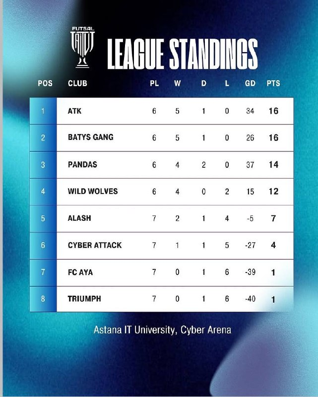

Gold League
The Gold League brings together the four strongest AITU futsal teams for high-level university competition.
- Top 4 AITU teams
- Competitive league format
- Regular match schedule
The Gold League brings together the four strongest AITU futsal teams for high-level university competition.
The Silver League includes eight teams and gives more AITU students an opportunity to compete and develop.
The following standings are presented from the provided AITU futsal league table.
| Pos | Club | PL | W | D | L | GD | PTS |
|---|---|---|---|---|---|---|---|
| 1 | ATK | 6 | 5 | 1 | 0 | 34 | 16 |
| 2 | BATYS GANG | 6 | 5 | 1 | 0 | 26 | 16 |
| 3 | PANDAS | 6 | 4 | 2 | 0 | 37 | 14 |
| 4 | WILD WOLVES | 6 | 4 | 0 | 2 | 15 | 12 |
| 5 | ALASH | 7 | 2 | 1 | 4 | -5 | 7 |
| 6 | CYBER ATTACK | 7 | 1 | 1 | 5 | -27 | 4 |
| 7 | FC AYA | 7 | 0 | 1 | 6 | -39 | 1 |
| 8 | TRIUMPH | 7 | 0 | 1 | 6 | -40 | 1 |

AITU Futsal matches are held at the university's Cyber Arena from 18:00 to 20:00.
| Day | Time | Activity |
|---|---|---|
| Tuesday | 18:00–20:00 | League matches |
| Thursday | 18:00–20:00 | League matches |